Unconstrained ordination
Tad & Anna
Assigned Reading:
Chapter 5 from: Borcard, D., Gillet, F. and Legendre, P. 2011. Numerical Ecology with R. Springer. link
Ramette, A. 2007. Multivariate analyses in microbial ecology. FEMS Microbiology Ecology 62: 142-160. DOI: 10.1111/j.1574-6941.2007.00375.x
Key Points
Unconstrained vs. constrained ordination
Fig 3 in Ramette 2007 - left and right: Borcard et al. Ch 5 and 6, respectively
PCA
- Scaling 1 – use this if main interest is objects
“distance biplot” (distance among objects is Euclidean distance, angle among descriptors meaningless) - Fig 5.2
- Scaling 2 – use this if main interest is descriptors
“correlation biplot” (angles between descriptors reflect their correlations, distance among objects is not approxmate of Euclidean distance) - Fig 5.2
vegan’s default is scaling 2 (a bit strange?)Combining PCA with clustering can be powerful for confirmation (Fig 5.3)
CA
Chi-square distance not influenced by double zeros, unlike Euclidian distance in PCA; data have to be frequency or freq-like
Scaling 1 vs. 2 – similar to PCA
post-hoc
envfit()(Is constrained ordination better? Useful with NMDS?)
PCoA
Distance measured by any similarity measure
Q mode (objects, or sites) and R mode (variables, or species or env factors)
Rarely used (Ramette’s Table 1) - used more now?
NMDS
Any distance matrix (commonly, Bray-Curtis dissimilarity)
May be sensitive to initial configuration (local optimum) - Could use PCoA ordination as a start.
metaMDS()uses random startsNeeds fast computer – now not much of a problem
“A test winner, and a natural choice …” (Jari Oksanen)
Bray-Curtis dissimilarity - Reasons why popular (Clarke and Warwick 2001):
- 0 when identical
- 1 when no species shared
- Not affected by measurement unit
- Not affected by inclusion or exclusion of species jointly absent
- Not affected by inclusion of exclusion of a third sample
- Differences in both total and relative abundances considered
Shepard diagram (Fig 5.11) and stress
According to Clarke and Warwick 2001:
- stress < 0.05: excellent representation
- stress < 0.1: good representation
- stress < 0.2: acceptable representation
- stress > 0.3: unsatisfactory representation
Which method to use? (Criteria by Ramette 2007)
Linear (PCA) vs. unimodal (CA) - Use plot of species abundances along ordination axes as diagnosis
Gradient length short (PCA) vs. long (CA), as determined by DCA
Absolute abundance (PCA) vs. relative abundance (CA)
Many zeros (CA)
Linear (PCA) vs. non linear (NMDS, PCoA)
Shepard diagram to decide between NMDS and PCoA
Discrete groups of objects expected (cluster) vs. not expected (ordination)
Analysis Example
Unconstrained ordinations are used as exploratory methods to understand multidimensional data. Generally they use eigenvalues to represent new synthetic axes that explain the most variation in the data/cluster of samples (and are orthogonal to one another). Ordination can be thought of as a projection of multidimensional scatterplot onto new axes, ideally a few of which explain significant variation.
The most common unconstrained ordination methods are:
PCA (Principle component analysis) Often uses a correlation matrix of standardized response variables. Assumes linear relationships between variables and input data structure. PCA is for shorter environmental gradients.
PCoA (Principle coordinate analysis) uses a distance matrix as input. Shows distance or dissimilarities between objects in ordination space.
CA (Correspondence anlysis) Maximizes the correspondence between sample and species variation scores. Better for longer gradients than PCA, assumes unimodal distribution of points along axes.
NMDS (Nonmetric multidimensional scaling) ranked order not original distances and based on distance measure.
Prepare the data
Center and scale environmental data (or variables, could be traits of individuals, etc)
Important notes for scale function:
- center = TRUE means column means are subtracted
- scale = TRUE means centered columns are divided by standard deviations
envdat.phy <- as.data.frame(sample_data(physeq2))
envdat.phy.scaled <- scale(envdat.phy[,-c(13:16)], # cols 13:16 are factors
center=TRUE, # center data by subtracting column means
scale=TRUE) # divide centered data by standard deviationstr(envdat.phy.scaled)## num [1:77, 1:12] 3.734 -0.286 -0.995 0.187 -1.35 ...
## - attr(*, "dimnames")=List of 2
## ..$ : chr [1:77] "C29_18D" "C29_27D" "C29_34D" "C29_3D" ...
## ..$ : chr [1:12] "Depth" "Chlorophyll.a.a.PHA" "Calculated.Chlorophyll" "Oxygen.Saturation.." ...
## - attr(*, "scaled:center")= Named num [1:12] 13.416 0.596 3.355 89.584 8.125 ...
## ..- attr(*, "names")= chr [1:12] "Depth" "Chlorophyll.a.a.PHA" "Calculated.Chlorophyll" "Oxygen.Saturation.." ...
## - attr(*, "scaled:scale")= Named num [1:12] 8.458 0.132 1.859 5.706 0.947 ...
## ..- attr(*, "names")= chr [1:12] "Depth" "Chlorophyll.a.a.PHA" "Calculated.Chlorophyll" "Oxygen.Saturation.." ...PCA
General steps:
- Scale and center data (some programs can do for you in the ordination step)
- Check eigenvalues (scree plots)
- Look at ordination plots and appropriate axes
Vegan package
library(vegan)
library(gclus)
library(ape)
env.pca <- rda(envdat.phy[,-c(13:16)], scale=TRUE) # rda function makes PCAs
# scale means divide by species unit variance
env.pca## Call: rda(X = envdat.phy[, -c(13:16)], scale = TRUE)
##
## Inertia Rank
## Total 12
## Unconstrained 12 12
## Inertia is correlations
##
## Eigenvalues for unconstrained axes:
## PC1 PC2 PC3 PC4 PC5 PC6 PC7 PC8 PC9 PC10
## 2.9162 2.1837 1.7549 1.6099 0.9048 0.8154 0.6913 0.4585 0.3518 0.2123
## PC11 PC12
## 0.0972 0.0039##
## Call:
## rda(X = envdat.phy[, -c(13:16)], scale = TRUE)
##
## Partitioning of correlations:
## Inertia Proportion
## Total 12 1
## Unconstrained 12 1
##
## Eigenvalues, and their contribution to the correlations
##
## Importance of components:
## PC1 PC2 PC3 PC4 PC5 PC6 PC7
## Eigenvalue 2.916 2.184 1.7549 1.6099 0.9048 0.81538 0.69131
## Proportion Explained 0.243 0.182 0.1462 0.1342 0.0754 0.06795 0.05761
## Cumulative Proportion 0.243 0.425 0.5712 0.7054 0.7808 0.84874 0.90635
## PC8 PC9 PC10 PC11 PC12
## Eigenvalue 0.45851 0.35182 0.2123 0.09723 0.003858
## Proportion Explained 0.03821 0.02932 0.0177 0.00810 0.000320
## Cumulative Proportion 0.94456 0.97388 0.9916 0.99968 1.000000
##
## Scaling 1 for species and site scores
## * Sites are scaled proportional to eigenvalues
## * Species are unscaled: weighted dispersion equal on all dimensions
## * General scaling constant of scores: 5.495392
##
##
## Species scores
##
## PC1 PC2 PC3 PC4 PC5 PC6
## Depth -0.0292 -0.6627 -2.2259 2.6883 -0.2391 0.43043
## Chlorophyll.a.a.PHA 0.1480 1.7966 -2.1872 -2.7819 0.3878 0.51228
## Calculated.Chlorophyll 1.6436 0.9838 0.8587 -1.6912 -1.5137 2.35915
## Oxygen.Saturation.. -1.7255 0.1207 -1.2497 -0.8077 -4.2340 -0.85391
## Calculated.Oxygen -2.8687 1.1717 0.2561 0.4929 -1.1526 -0.65401
## Salinity 2.5078 0.8143 -1.7518 0.9090 -0.4242 -0.55199
## Temperature 0.7590 -2.4916 0.4988 -2.2810 -0.8393 0.81455
## JD.Ammonium -2.2168 0.3243 1.7653 -1.0179 1.7497 0.08852
## JD.Nitrate 0.5089 2.7258 1.8164 0.5494 -0.6246 -0.77269
## JD.Nitrite 1.6563 1.9847 0.8800 -0.3856 -0.1016 -2.58025
## logflow -0.3595 1.8821 0.5080 1.5789 -0.4736 3.83931
## logSPM 1.1650 -1.5130 2.7075 1.2122 -1.9683 -0.24100
##
##
## Site scores (weighted sums of species scores)
##
## PC1 PC2 PC3 PC4 PC5 PC6
## C29_18D 0.252923 0.003543 -0.587833 0.355655 0.2470320 0.262328
## C29_27D 0.191866 -0.162901 0.099924 0.007171 -0.1336766 0.049478
## C29_34D 0.714050 0.235689 0.430021 -0.305987 -0.0039654 0.187933
## C29_3D -0.123498 -0.212195 0.126949 0.048413 -0.1933016 0.050783
## C29_3S -0.158845 -0.202507 0.173406 -0.063743 -0.1291975 0.012589
## C29_649D -0.011810 -0.038575 0.140297 -0.286665 -0.3036461 0.320868
## C29_657D -0.179059 -0.050233 0.091275 -0.253299 -0.0363079 0.126335
## C29_657S -0.175097 0.022324 0.075812 -0.420314 -0.0488288 0.150859
## C29_6D -0.113129 -0.301802 0.234749 0.173006 -0.0835214 -0.064199
## C29_6S -0.088230 -0.133996 0.080832 -0.148228 -0.0476196 0.024060
## C29_9D -0.002873 -0.210086 -0.047728 0.165152 0.0160114 0.103829
## C29_9S -0.011819 0.042435 -0.033880 -0.370110 0.0344542 0.130415
## C30_13D 0.336799 -0.356152 0.200713 0.147050 -0.0112879 0.039205
## C30_27D 0.497112 -0.440941 0.237442 0.089788 -0.2633791 0.099103
## C30_34D 1.228948 -0.448508 0.661634 0.254246 0.8284510 0.225639
## C30_3D -0.150827 -0.335638 0.123485 -0.024242 -0.1638561 0.045121
## C30_649D -0.159930 -0.362145 0.100769 -0.107685 -0.1174841 0.083967
## C30_657D -0.250444 -0.234715 -0.151863 -0.413799 0.1070838 0.141951
## C30_6D -0.080832 -0.298097 0.161588 0.039920 -0.2260605 -0.003100
## C30_9D 0.126377 -0.519395 0.255971 0.501108 -0.3459778 -0.046367
## C31_36D 0.571036 0.097110 -0.022168 -0.428045 -0.0857754 -0.051218
## C31_3D -0.179219 -0.340107 -0.062331 -0.154892 -0.1213342 0.014437
## C31_649D -0.206622 -0.353201 0.042158 -0.219549 -0.0334350 0.022544
## C31_657D -0.326427 -0.334303 -0.050061 -0.334485 0.2435693 0.030262
## C31_6D -0.094946 -0.198639 -0.128954 -0.294309 -0.1426143 0.009532
## C31_9D 0.159957 -0.326598 -0.182333 0.102227 -0.1752083 0.019305
## C32_13D 0.196818 -0.027887 -0.351517 -0.386030 0.1257062 -0.001484
## C32_27D 0.406232 0.089181 -0.185758 -0.327559 -0.0534862 -0.213406
## C32_36D 0.391002 0.113043 0.112712 -0.299560 -0.1341927 -0.193299
## C32_3D -0.162842 -0.387924 -0.006378 -0.047441 0.0007877 -0.080535
## C32_649D -0.187669 -0.285908 -0.036656 -0.202572 0.0900818 -0.074502
## C32_657D -0.303293 -0.257167 0.035625 -0.290263 0.3077864 -0.099791
## C32_6D -0.090342 -0.248464 -0.049752 -0.184180 -0.0441651 -0.088949
## C32_9D 0.136033 -0.292044 -0.195251 0.083877 -0.0356685 -0.028493
## C33_13D 0.234820 0.110695 -0.410963 -0.203904 0.2016315 0.037004
## C33_27D 0.547914 0.255396 -0.087369 -0.104558 0.0281990 -0.424454
## C33_3D -0.208128 -0.051224 -0.051364 -0.113320 -0.0979677 -0.009047
## C33_649D -0.253707 -0.078511 -0.030332 -0.052683 -0.0506591 -0.049888
## C33_657D -0.443864 0.068279 0.006418 -0.248367 0.3075734 -0.084802
## C33_6D -0.140343 -0.020250 -0.041712 -0.091173 -0.0793307 -0.036662
## C33_9D 0.086639 -0.032892 -0.420761 0.092653 0.0548640 -0.023946
## C34_13D 0.185858 0.089664 -0.312141 -0.061136 0.1491129 -0.074861
## C34_3D -0.158664 -0.033720 0.143015 0.125095 -0.0456754 -0.080052
## C34_649D -0.230028 0.008684 0.085563 0.073914 -0.0200193 -0.096581
## C34_657D -0.287825 0.049849 0.150595 0.005917 0.2302344 -0.114346
## C34_6D 0.008003 -0.081470 0.182425 0.142881 -0.0846662 -0.084681
## C34_9D 0.176612 -0.140061 -0.156499 0.374286 -0.0473440 -0.081207
## C35_13D 0.237405 -0.043125 -0.103817 0.098383 0.0724302 -0.066542
## C35_27D 0.533638 0.292418 0.107037 0.115371 -0.0398035 -0.564424
## C35_649D -0.240206 -0.028023 0.160179 0.204181 -0.0405591 -0.197356
## C35_657D -0.283717 0.028473 0.205514 0.114277 0.0775683 -0.180190
## C35_6D 0.010994 -0.051891 0.056698 0.218277 -0.0159782 -0.188844
## C35_9D 0.143651 -0.091897 -0.212234 0.368939 -0.0694807 -0.123012
## C36_13D 0.090465 0.015538 -0.252331 0.121637 0.0723964 -0.096864
## C36_27D 0.237107 0.137368 -0.071190 0.213952 0.0434341 -0.251622
## C36_34D 0.391241 0.675861 0.187783 -0.095871 -0.0572504 -0.211153
## C36_3D -0.444209 0.257591 0.028747 0.020788 0.0406687 -0.193144
## C36_649D -0.542348 0.232289 0.085364 0.097606 0.1177703 -0.271178
## C36_657D -0.577370 0.272796 0.185595 -0.049863 0.1587858 -0.154887
## C36_6D -0.236550 0.253829 -0.131167 -0.068317 -0.0222883 -0.126544
## C36_9D -0.044604 0.104527 -0.419269 0.211003 0.0390093 -0.085333
## C37_13D -0.064482 0.285010 -0.346000 0.118027 0.0006593 0.297747
## C37_27D 0.078425 0.247208 -0.046073 0.362675 -0.1449825 0.181789
## C37_36D 0.352133 0.934904 0.269903 -0.068939 -0.3656746 0.120756
## C37_3D -0.469678 0.386656 0.237363 0.322502 0.0079203 0.131299
## C37_649D -0.401348 0.390470 0.313796 0.325310 -0.0456812 0.140532
## C37_657D -0.414300 0.500252 0.409536 -0.015077 0.2848446 0.373534
## C37_9D -0.134750 0.175561 -0.116319 0.571877 -0.1046549 0.185607
## C38_13D 0.057749 0.169897 -0.448083 -0.083472 0.1240347 0.175385
## C38_18D 0.018514 -0.017656 -0.689758 0.357425 -0.0465301 0.244305
## C38_27D 0.079827 0.300246 -0.435739 -0.121847 -0.0379900 0.069288
## C38_36D 0.447364 0.388721 0.118083 -0.304611 -0.3190484 0.319564
## C38_3D -0.118343 0.287468 0.154647 -0.028002 0.0920965 0.089125
## C38_649D -0.120023 0.121270 0.315613 0.182174 0.1148219 0.082608
## C38_657D -0.193563 0.044728 0.343156 0.167489 0.1942434 0.110073
## C38_6D -0.137514 0.238798 0.038942 0.064110 0.1669545 -0.038758
## C38_9D 0.075808 0.103077 -0.295752 0.235736 0.0893573 0.146561Look at the eigenvalues. Numerical Ecology in R recommends keeping all axes that are above the mean. One can also use the “elbow” method, look for a strong decrease in eigenvalues followed by slower decreases like a bend in the elbow. If several PCs have similar variances they are ill defined. If you include one you should include all of them as arbitrarily choosing the first one may not be the correct interpretation.
ev <- env.pca$CA$eig
ev>mean(ev)## PC1 PC2 PC3 PC4 PC5 PC6 PC7 PC8 PC9 PC10 PC11 PC12
## TRUE TRUE TRUE TRUE FALSE FALSE FALSE FALSE FALSE FALSE FALSE FALSEDivide eigenvalues by total inertia to explain the proportion of variance explained. Inertia should be the sum of all the eigenvalues (total variance of data). The below plots show eigenvalues with the mean plotted as a horizonatl line(top) and the broken stick model (bottom) which caluclates the eigenvalues you would expect to get if you picked PCs randomly.
par(mfrow=c(2,1))
barplot(ev, main="eigenvalues", col="bisque", las=2)
abline(h=mean(ev), col="red")
legend("topright", "Average eignenvalue", lwd=1, col=2)
barplot(t(cbind(100*ev/sum(ev), bsm$p[n:1])), beside=TRUE, main="% variance", col=c("bisque", 2), las=2)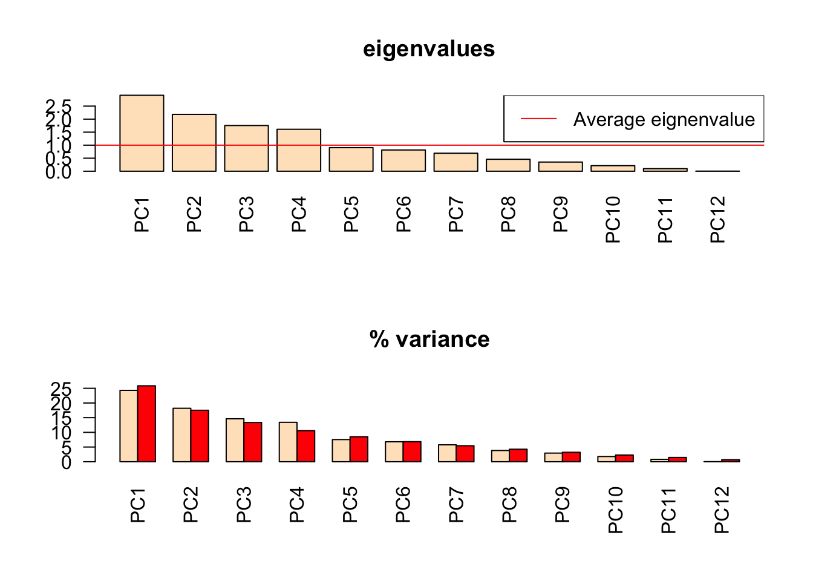
You can look at projected points in two scalings. Scaling 1 is good for euclidean distances between objects (samples/sites). Scaling 2 is for understanding the correlation (angles between arrows) between species (variables).
par(mfrow=c(1,2))
biplot(env.pca, scaling=1, main="PCA scaling 1") # scaling 1 for distances between objects
biplot(env.pca, main="PCA scaling 2") # correlation biplot, for seeing correlation between response variables (species) see angles. 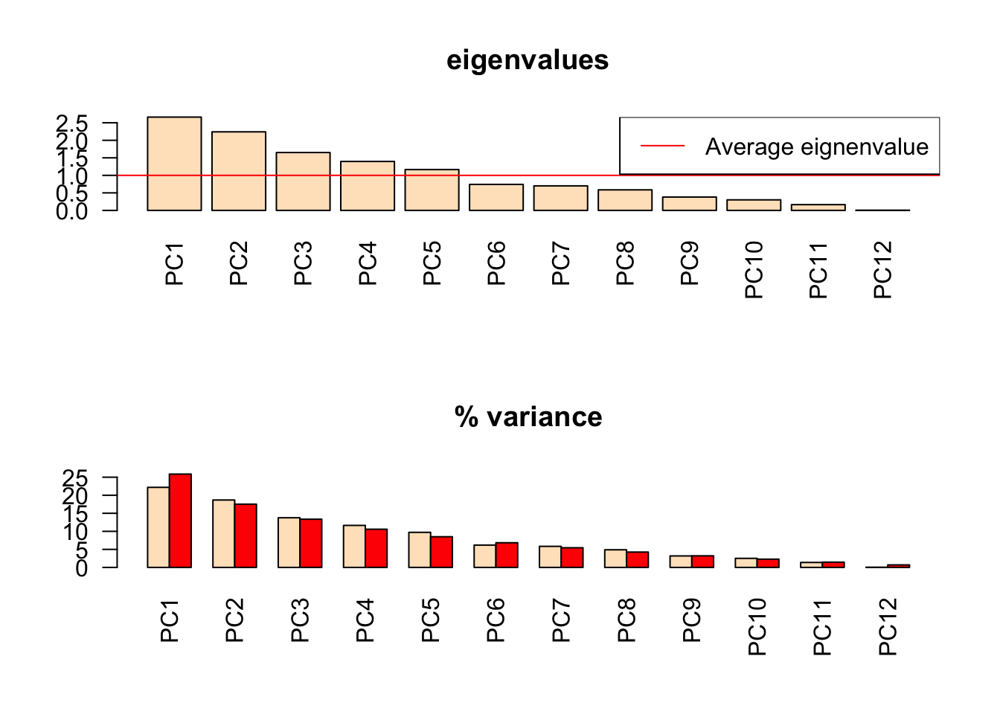
Alternative PCA functions
There are lots of functions for creating PCAs in R including princomp (stats) and dudi.pca (ade4).
Notes:
- Eigenvalue = measures the importance of variance of an axis.
- Inertia = “variation”; sum of variance of variables (covariance matrix) or sum of diagonal values (correlation matrix)
library(ade4)
pr.env2 <- prcomp(envdat.phy.scaled)
prin.env2 <- princomp(envdat.phy.scaled)
dudi.env2 <-dudi.pca(envdat.phy.scaled, center=F, scale=F, scannf=FALSE, nf=4) # ade4 librarypr.env2## Standard deviations (1, .., p=12):
## [1] 1.70769928 1.47774062 1.32472815 1.26881443 0.95120754 0.90298350
## [7] 0.83144869 0.67713729 0.59314185 0.46080985 0.31182237 0.06211363
##
## Rotation (n x k) = (12 x 12):
## PC1 PC2 PC3 PC4
## Depth -0.005313622 -0.12059069 -0.40504496 0.48918633
## Chlorophyll.a.a.PHA 0.026930483 0.32693026 -0.39801258 -0.50621942
## Calculated.Chlorophyll 0.299091061 0.17902838 0.15625362 -0.30774730
## Oxygen.Saturation.. -0.313994886 0.02196435 -0.22741485 -0.14697830
## Calculated.Oxygen -0.522018814 0.21320646 0.04660956 0.08970040
## Salinity 0.456344659 0.14818639 -0.31878036 0.16541278
## Temperature 0.138113488 -0.45339877 0.09076421 -0.41507130
## JD.Ammonium -0.403389223 0.05901818 0.32123360 -0.18522248
## JD.Nitrate 0.092602169 0.49602158 0.33052617 0.09997273
## JD.Nitrite 0.301404013 0.36115043 0.16013828 -0.07017097
## logflow -0.065424584 0.34249095 0.09243757 0.28731578
## logSPM 0.212004849 -0.27532529 0.49267920 0.22058932
## PC5 PC6 PC7 PC8
## Depth -0.04351497 0.07832493 -0.40409951 -0.60211642
## Chlorophyll.a.a.PHA 0.07056221 0.09321968 -0.10872065 0.08744925
## Calculated.Chlorophyll -0.27545652 0.42929558 -0.55885386 -0.06597702
## Oxygen.Saturation.. -0.77046655 -0.15538660 0.12684303 -0.08386211
## Calculated.Oxygen -0.20973206 -0.11901041 -0.14152286 0.11682201
## Salinity -0.07718595 -0.10044605 -0.00293044 0.19439448
## Temperature -0.15272046 0.14822330 0.28572289 -0.41180879
## JD.Ammonium 0.31840282 0.01610872 -0.24737326 -0.31232678
## JD.Nitrate -0.11366680 -0.14060747 -0.08771393 -0.07916812
## JD.Nitrite -0.01848704 -0.46952971 0.24241053 -0.49470595
## logflow -0.08618663 0.69864241 0.48623520 -0.11647106
## logSPM -0.35818051 -0.04385492 -0.17529103 0.18784154
## PC9 PC10 PC11 PC12
## Depth 0.13246499 -0.01046354 0.17464368 0.006256985
## Chlorophyll.a.a.PHA 0.15258588 0.11498980 0.63870048 -0.011804038
## Calculated.Chlorophyll -0.22058786 -0.24423302 -0.27226863 0.009445403
## Oxygen.Saturation.. -0.08135906 0.21751411 -0.14127064 -0.335901563
## Calculated.Oxygen -0.08746035 -0.24150028 0.09098860 0.711156105
## Salinity -0.22374874 0.56974797 -0.20809421 0.411076278
## Temperature 0.27992929 0.09733093 -0.02182902 0.458261853
## JD.Ammonium -0.27419425 0.59807439 -0.03957643 -0.038372416
## JD.Nitrate 0.72551421 0.17584975 -0.14874992 -0.008536020
## JD.Nitrite -0.37696345 -0.23736830 0.15914166 0.009475187
## logflow -0.13052170 0.07842485 0.13624153 0.007540065
## logSPM -0.08442947 0.19022875 0.58977486 -0.021905783prin.env2 # sv is the standard deviations of PCs## Call:
## princomp(x = envdat.phy.scaled)
##
## Standard deviations:
## Comp.1 Comp.2 Comp.3 Comp.4 Comp.5 Comp.6
## 1.69657409 1.46811355 1.31609791 1.26054845 0.94501068 0.89710081
## Comp.7 Comp.8 Comp.9 Comp.10 Comp.11 Comp.12
## 0.82603202 0.67272593 0.58927769 0.45780780 0.30979093 0.06170897
##
## 12 variables and 77 observations. # loadings is matrix of variable loadings, columns contain eigenvectors
# Only for looking at scaling 2??dudi.env2## Duality diagramm
## class: pca dudi
## $call: dudi.pca(df = envdat.phy.scaled, center = F, scale = F, scannf = FALSE,
## nf = 4)
##
## $nf: 4 axis-components saved
## $rank: 12
## eigen values: 2.878 2.155 1.732 1.589 0.893 ...
## vector length mode content
## 1 $cw 12 numeric column weights
## 2 $lw 77 numeric row weights
## 3 $eig 12 numeric eigen values
##
## data.frame nrow ncol content
## 1 $tab 77 12 modified array
## 2 $li 77 4 row coordinates
## 3 $l1 77 4 row normed scores
## 4 $co 12 4 column coordinates
## 5 $c1 12 4 column normed scores
## other elements: cent normThese should all be doing the same thing, so when we look at the eigenvalues they should be the same. And it looks like the first 4 axes are important.
meaneig <-mean(dudi.env2$eig) # .98
library(factoextra)
eig0 <- fviz_eig(pr.env2, geom="bar", width=.4, title="prcomp")+theme(panel.grid=element_blank())
eig1 <- fviz_eig(prin.env2, geom="bar", width=.4, title="princomp")+theme(panel.grid=element_blank())
eig2 <- fviz_eig(dudi.env2, geom="bar", width=.4, title="dudi.pca")+theme(panel.grid=element_blank())
library(gridExtra)
grid.arrange(eig0,eig1, eig2, nrow=1)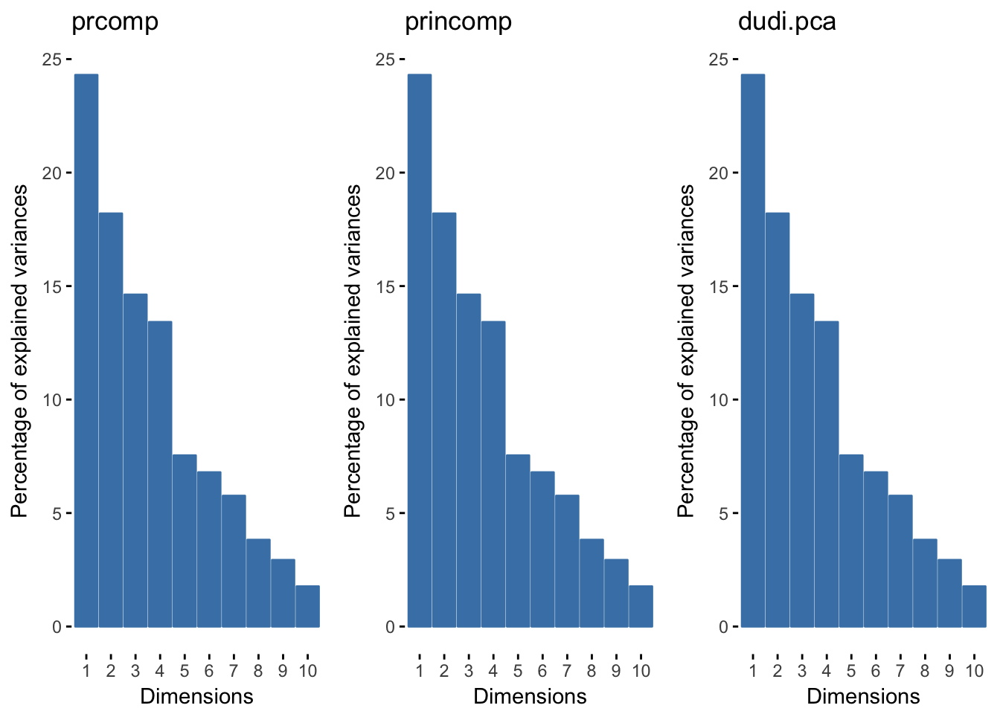
p0<-fviz_pca_ind(pr.env2, geom="point",
habillage= envdat.phy$system)
p0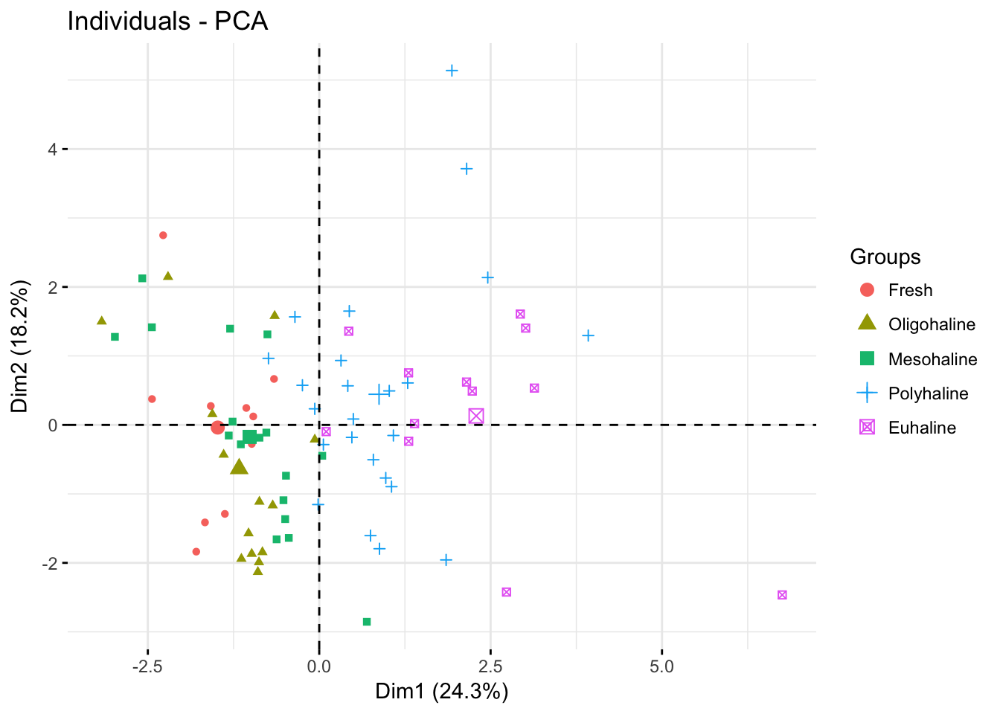
fviz_pca_ind(pr.env2, geom="point",
habillage= envdat.phy$system,
addEllipses = TRUE,
ellipse.level=.69)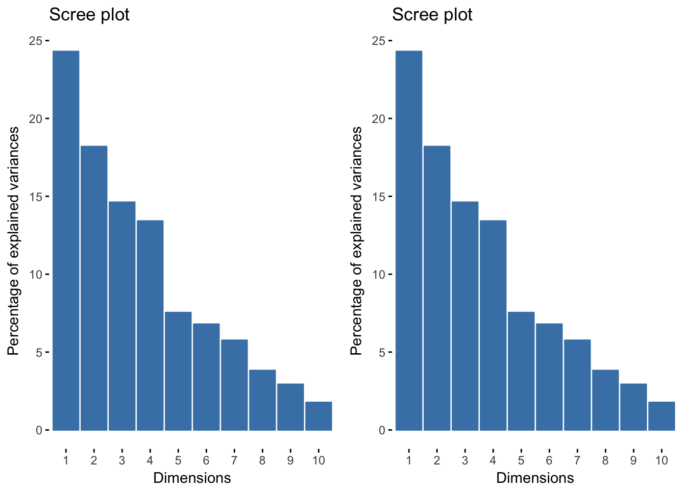
prin.p <- fviz_pca_biplot(pr.env2,
label="var",
habillage=envdat.phy$system,
axes = 1:2)
prin.p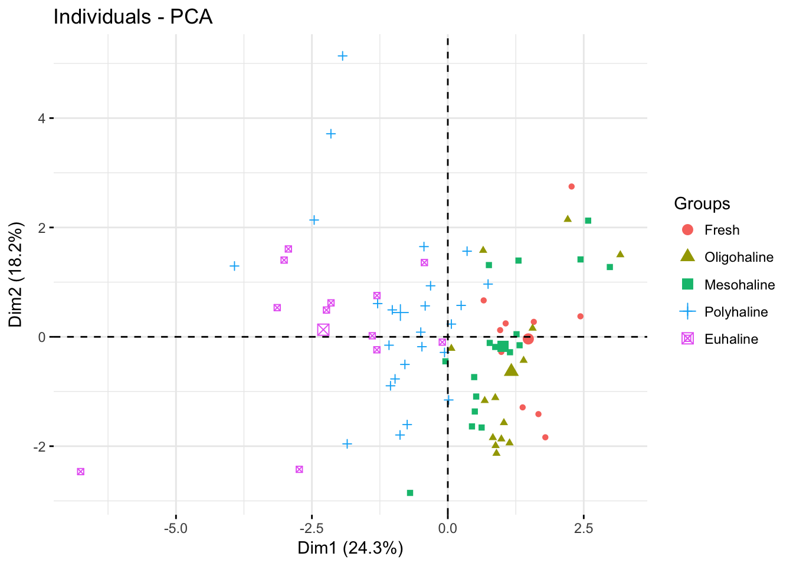
fviz_pca_var(pr.env2, col.circle="black")+
xlim(c(-1.2,1.2)) +
ylim(c(-1.2,1.2))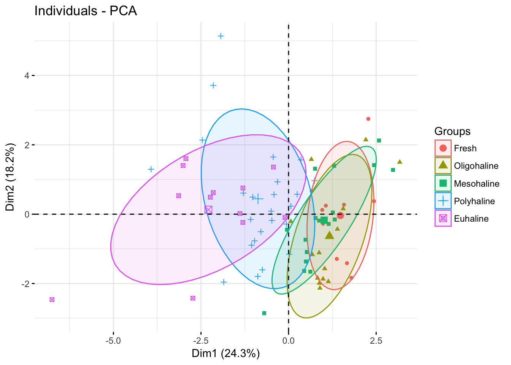
p1 <- fviz_pca_ind(pr.env2, geom="point",
habillage= envdat.phy$system,
axes= 2:3)
p2 <- fviz_pca_ind(pr.env2, geom="point",
habillage= envdat.phy$system,
axes= 3:4)
p3 <- fviz_pca_ind(pr.env2, geom="point",
habillage= envdat.phy$system,
axes= c(1,3))
p4 <- fviz_pca_ind(pr.env2, geom="point",
habillage= envdat.phy$system,
axes= c(1,4))
p5 <- fviz_pca_ind(pr.env2, geom="point",
habillage= envdat.phy$system,
axes= c(2,4))
grid.arrange(p0,p1,p2,p3,p4,p5)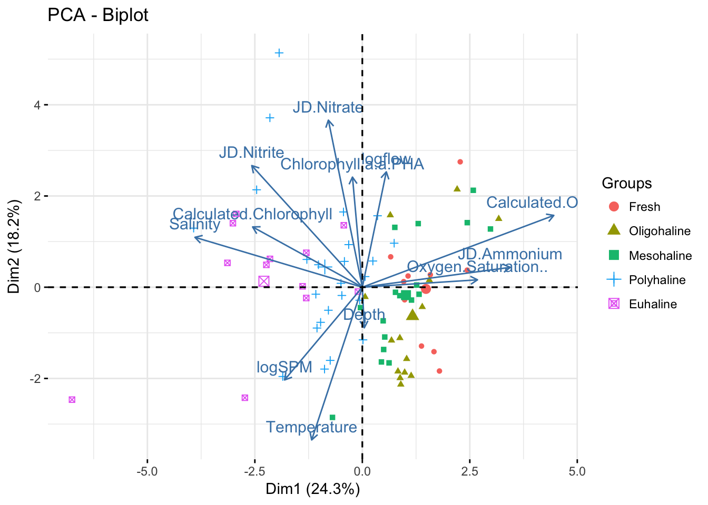
CA
Should only be done on frequency data but just to show that you can use the wrong ordination if you want. The output doesn’t make a whole lot of sense.
dud.env.coa<- dudi.coa(envdat.phy[,-c(13:16)],
nf=2,
scannf=FALSE)fviz_eig(dud.env.coa)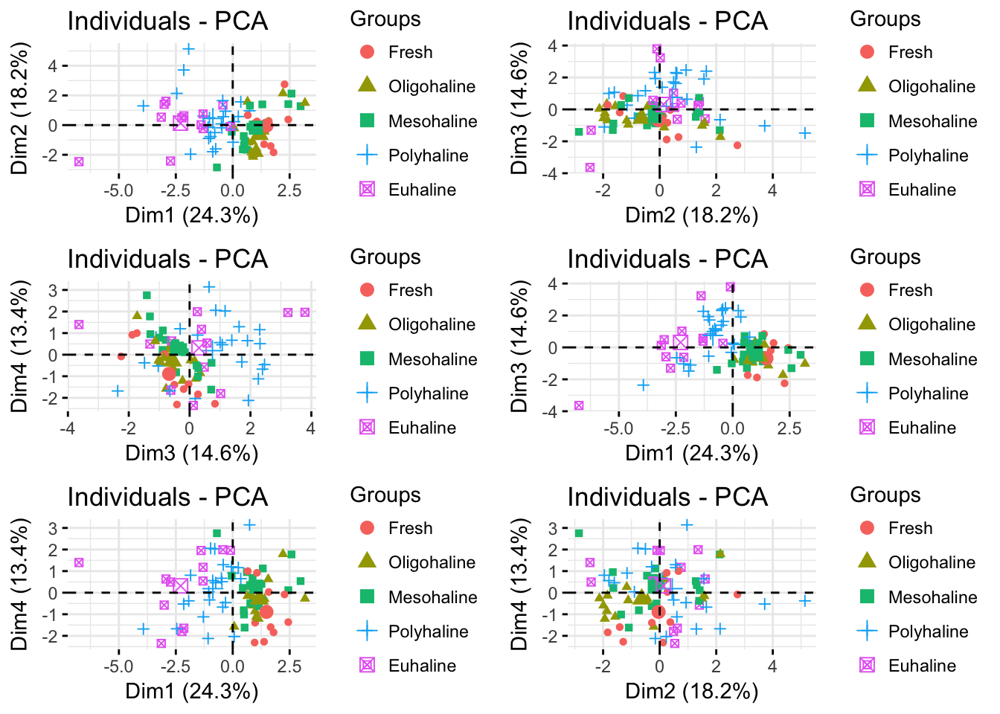
Joint plot shows samples/sites and variables/species. Species are near center of inertia of samples where they are most likely to occur
fviz_ca_biplot(dud.env.coa,
geom=c("point", "text"),
label="col")
PCoA
PCoA is common in microbial ecology. Here are some examples of PCoA on OTU counts using the phyloseq package (based on vegan).
bray-curtis dissimilarity
plot_scree(ord.pco3)
jaccard distance
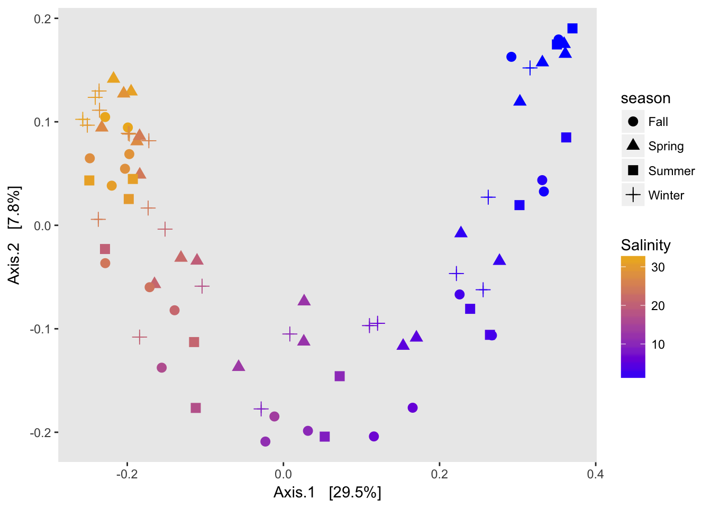
wunifrac
If you update to ape version 5.0, download the newest phyloseq version. Should be available on joey711 github if the newest bioconductor version still does not have the fix.
Unifrac is based on shared branch lengths between samples and calculated as (sum of unshared branch lengths)/(sum of all tree branch lengths (shared+unshared)). Weighted unifrac (wunifrac in phyloseq) incorporates the abundance of taxa as well.
A note on horseshoes and arch effects: if there is a lot of species turnover and samples at each end of a gradient have no overlapping species, then placing their true distance from each other is difficult. Since my gradient spans freshwater to saltwater, there is basically no overlap on the OTU level between the two ends of the gradient so a horshoe or arch is to be expected.
CA on taxa data
ord.cca <- ordinate(physeq2, method="CCA")
ord.cca## Call: cca(X = veganifyOTU(physeq))
##
## Inertia Rank
## Total 1.196
## Unconstrained 1.196 76
## Inertia is mean squared contingency coefficient
##
## Eigenvalues for unconstrained axes:
## CA1 CA2 CA3 CA4 CA5 CA6 CA7 CA8
## 0.21966 0.06429 0.05646 0.04401 0.03539 0.02703 0.02347 0.02060
## (Showed only 8 of all 76 unconstrained eigenvalues)plot_scree(ord.cca)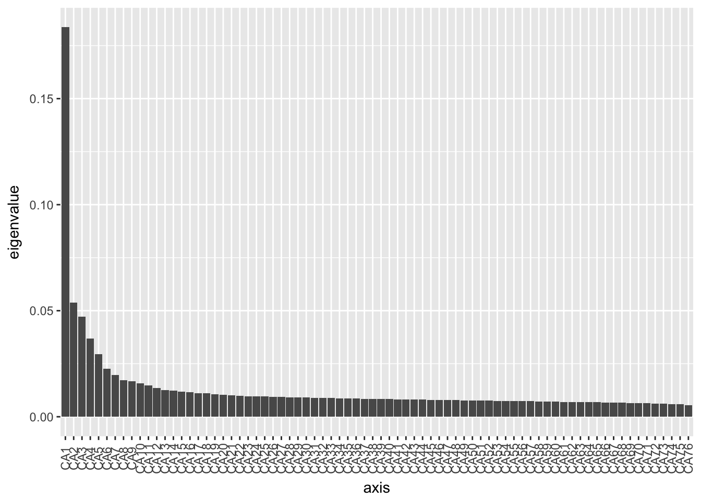
p.cca <-plot_ordination(physeq2,
ord.cca,
color="Salinity",
shape="season")+
geom_point(size=3)+
scale_color_continuous(low="blue", high="goldenrod2")+
labs(main="CCA")+
theme(panel.grid=element_blank())
p.cca
NMDS
While the original distance between samples is not preserved, NMDS is useful for understanding ranked distances in a 2D space.
And choice of distance matters a lot!
jaccard
ord.nmds1 <- ordinate(physeq2, method="NMDS", distance="jaccard")## Wisconsin double standardization
## Run 0 stress 0.1012678
## Run 1 stress 0.118503
## Run 2 stress 0.1184118
## Run 3 stress 0.1267169
## Run 4 stress 0.1184042
## Run 5 stress 0.1012454
## ... New best solution
## ... Procrustes: rmse 0.001281051 max resid 0.006051407
## ... Similar to previous best
## Run 6 stress 0.1014037
## ... Procrustes: rmse 0.004534251 max resid 0.0321884
## Run 7 stress 0.1260781
## Run 8 stress 0.1013222
## ... Procrustes: rmse 0.002224956 max resid 0.01711799
## Run 9 stress 0.1184768
## Run 10 stress 0.1014225
## ... Procrustes: rmse 0.004201907 max resid 0.03172995
## Run 11 stress 0.1012474
## ... Procrustes: rmse 0.000326939 max resid 0.002070203
## ... Similar to previous best
## Run 12 stress 0.1013225
## ... Procrustes: rmse 0.002242484 max resid 0.01712823
## Run 13 stress 0.1184417
## Run 14 stress 0.1013741
## ... Procrustes: rmse 0.004250078 max resid 0.03161207
## Run 15 stress 0.1184816
## Run 16 stress 0.1377623
## Run 17 stress 0.1012217
## ... New best solution
## ... Procrustes: rmse 0.001189341 max resid 0.008999512
## ... Similar to previous best
## Run 18 stress 0.1012465
## ... Procrustes: rmse 0.001280192 max resid 0.009597685
## ... Similar to previous best
## Run 19 stress 0.1014312
## ... Procrustes: rmse 0.004278184 max resid 0.03151176
## Run 20 stress 0.1013971
## ... Procrustes: rmse 0.004188231 max resid 0.03176595
## *** Solution reachedord.nmds1##
## Call:
## metaMDS(comm = veganifyOTU(physeq), distance = distance)
##
## global Multidimensional Scaling using monoMDS
##
## Data: wisconsin(veganifyOTU(physeq))
## Distance: jaccard
##
## Dimensions: 2
## Stress: 0.1012217
## Stress type 1, weak ties
## Two convergent solutions found after 20 tries
## Scaling: centring, PC rotation, halfchange scaling
## Species: expanded scores based on 'wisconsin(veganifyOTU(physeq))'plot_ordination(physeq2,
ord.nmds1,
color="Salinity",
shape="season")+
geom_point(size=3)+
scale_color_continuous(low="blue", high="goldenrod2")+
scale_shape_manual(values=c(7,6,16,8))+
labs(main="stress .10")+
theme(panel.grid=element_blank())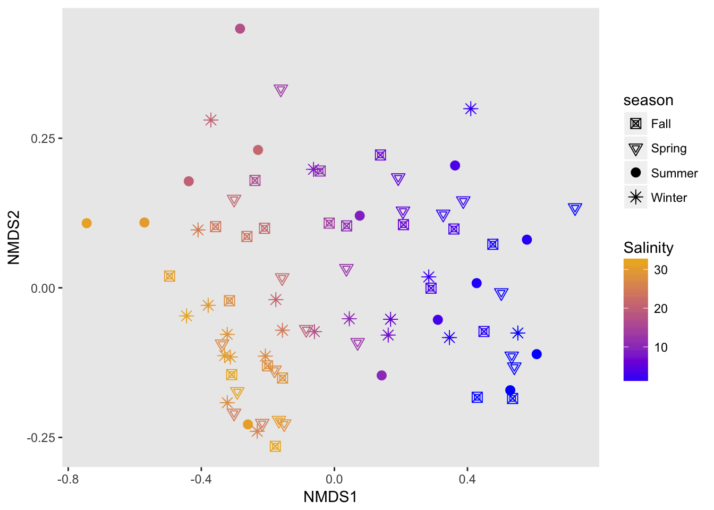
weighted unifrac
Indirect Gradient Analysis
Environmental fit function envfit from vegan can be used to get explanatory variables. Looks at correlation between ordination and environmental variables. Arrow points in the “directin of the gradient” and length reflects strength of correlation.
ef.nmds <- envfit(ord.nmds2, envdat.phy.scaled, permutations = 999)
ef.nmds##
## ***VECTORS
##
## NMDS1 NMDS2 r2 Pr(>r)
## Depth -0.66430 0.74747 0.0637 0.100 .
## Chlorophyll.a.a.PHA -0.04851 0.99882 0.1507 0.006 **
## Calculated.Chlorophyll -0.22743 0.97379 0.1054 0.017 *
## Oxygen.Saturation.. 0.86967 -0.49363 0.0290 0.357
## Calculated.Oxygen 0.46078 0.88751 0.3925 0.001 ***
## Salinity -0.95153 0.30757 0.9043 0.001 ***
## Temperature 0.10116 -0.99487 0.4886 0.001 ***
## JD.Ammonium 0.90116 0.43348 0.4884 0.001 ***
## JD.Nitrate -0.14615 0.98926 0.1529 0.002 **
## JD.Nitrite -0.74090 0.67161 0.1374 0.002 **
## logflow 0.01747 0.99985 0.2445 0.001 ***
## logSPM -0.14489 -0.98945 0.2887 0.001 ***
## ---
## Signif. codes: 0 '***' 0.001 '**' 0.01 '*' 0.05 '.' 0.1 ' ' 1
## Permutation: free
## Number of permutations: 999plot(ord.nmds2, display = "sites", cex=1)
plot(ef.nmds, p.max = 0.1)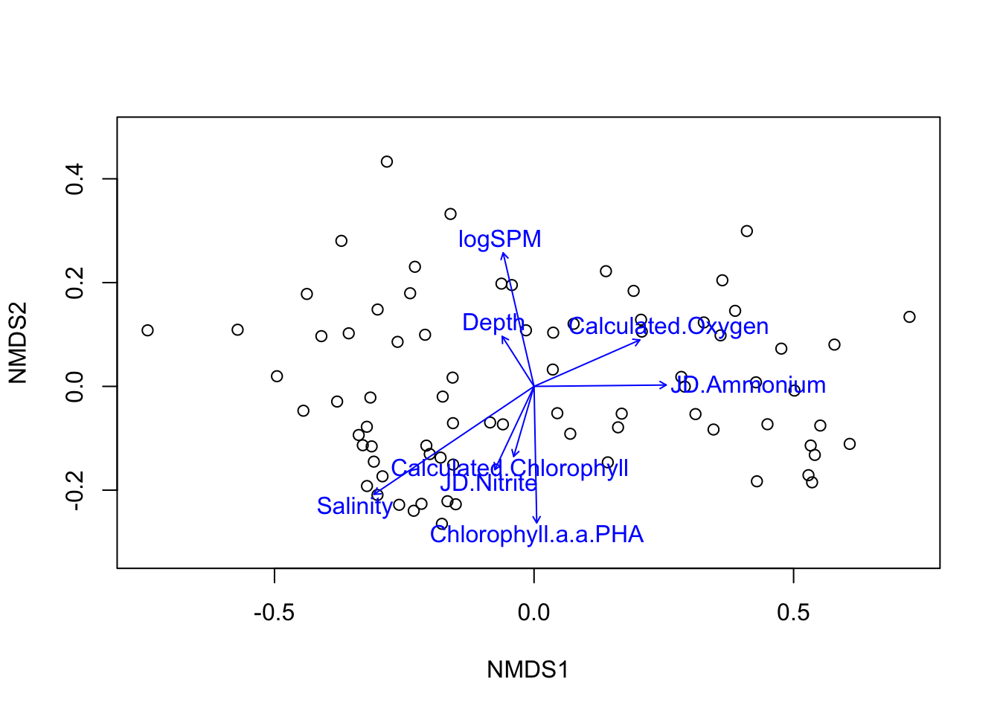
Discussion Questions
- Do you use unconstrained ordinations?
- What kind of data are unconstrained ordinations useful for?
- Are they intuitive or do you need to thoroughly know linear algebra?